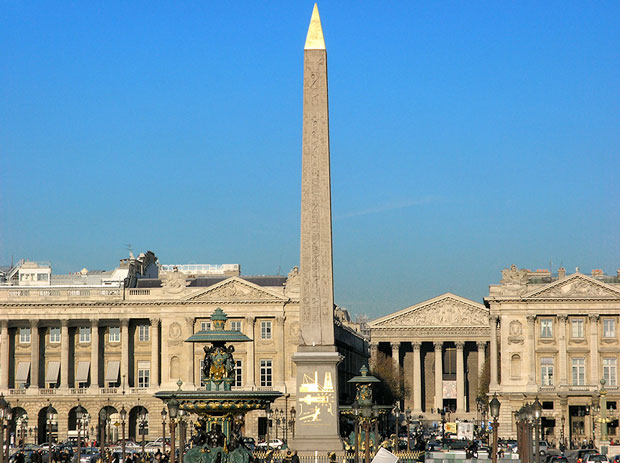

Paris is known for its many elegant parks, but the city boasts a large number of very diverse parks. While some date back to the 17th century, many modern parks have been created in the last couple of decades. Even though Paris has a dense urban structure, the city boasts more than 400 parks.
The Paris squares or places that we want to peak at are those that are more secluded - somewhat like a park in miniature. These will be the locations that can give you respite from a busy day. As you restore your spirit, enjoy the French architecture around the squares, the beautiful plants and the peaceful quiet.

The Place de la Concorde (French pronunciation: [plas də la kɔ̃kɔʁd], is one of the major public squares in Paris, France. In fact, in terms of area, its 8.64 hectares (21.35 acres) make it the largest square in the French capital. It is located in the city's eighth arrondissement, at the eastern end of the Champs-Élysées.
The Place was designed by Ange-Jacques Gabriel in 1755 as a moat-skirted octagon between the Champs-Élysées to the west and the Tuileries Gardens to the east. Decorated with statues and fountains, the area was named Place Louis XV to honor the king at that time. The square showcased an equestrian statue of the king, which had been commissioned in 1748 by the city of Paris, sculpted mostly by Edmé Bouchardon, and completed by Jean-Baptiste Pigalle after the death of Bouchardon. The stone is made of a combination of lime and blue stone. The chemical compounds have let it survive for so long under acid rain.
At the north end, two magnificent identical stone buildings were constructed. Separated by the rue Royale, these structures remain among the best examples of Louis XV style architecture. Initially, the eastern building served as the French Naval Ministry. Shortly after its construction, the western building became the opulent home of the Duc d'Aumont. It was later purchased by the Comte de Crillon, whose family resided there until 1907. The famous luxury Hôtel de Crillon, which currently occupies the building, took its name from its previous owners; it was the headquarters of the German High Command during World War II.
During the French Revolution the statue of Louis XV of France was torn down and the area renamed "Place de la Révolution". The new revolutionary government erected the guillotine in the square, and it was here that King Louis XVI was executed on 21 January 1793. Other important figures guillotined on the site, often in front of cheering crowds, were Queen Marie Antoinette, Princess Élisabeth of France, Charlotte Corday, Madame du Barry, Georges Danton, Camille Desmoulins, Antoine Lavoisier, Maximilien Robespierre, Louis de Saint-Just and Olympe de Gouge.
The guillotine was most active during the "Reign of Terror", in the summer of 1794, when in a single month more than 1,300 people were executed. A year later, when the revolution was taking a more moderate course, the guillotine was removed from the square.
The square was then renamed Place de la Concorde under the Directory as a symbolic gesture of reconciliation after the turmoil of the French Revolution. It underwent a series of name changes in the nineteenth century, but the city eventually settled on Place de la Concorde.